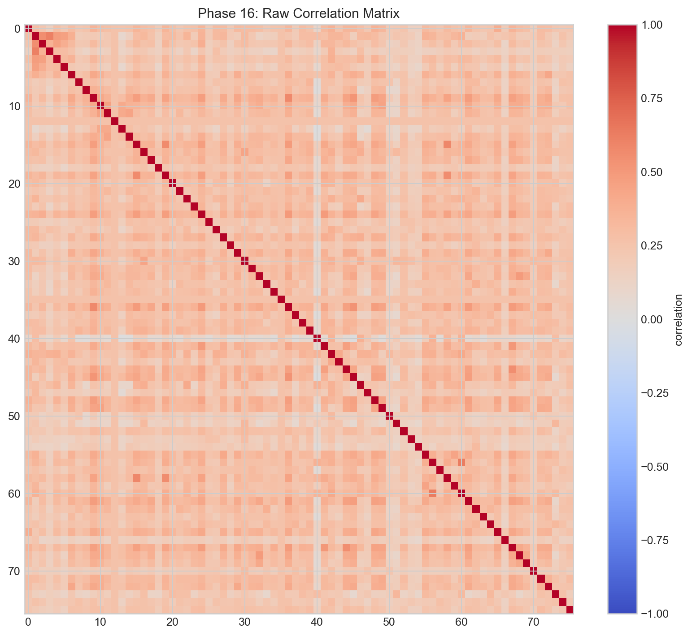
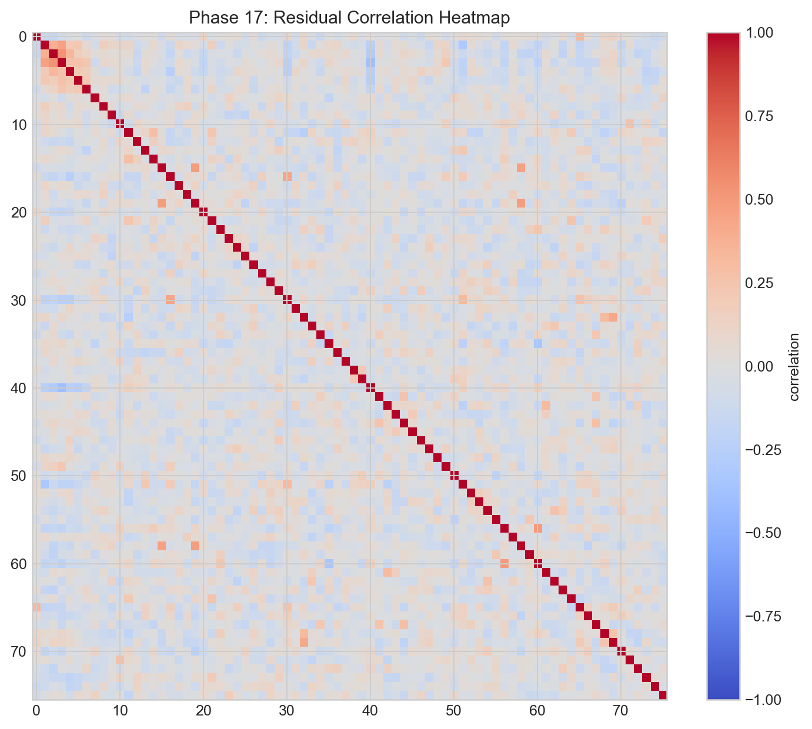
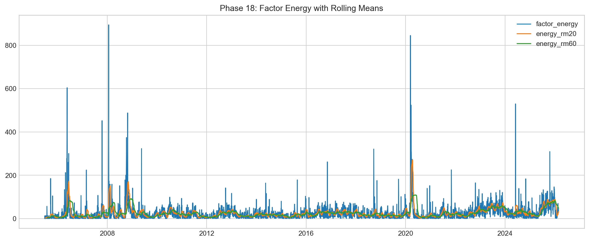
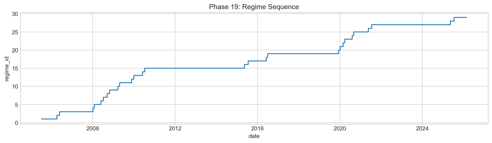
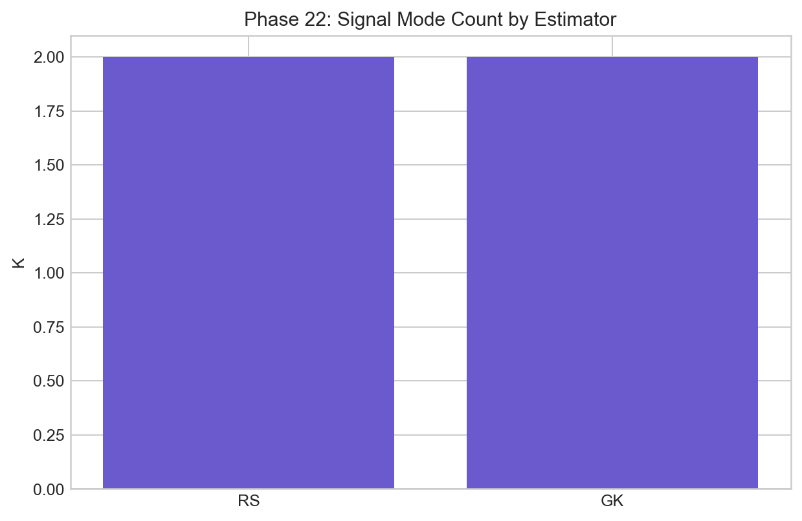
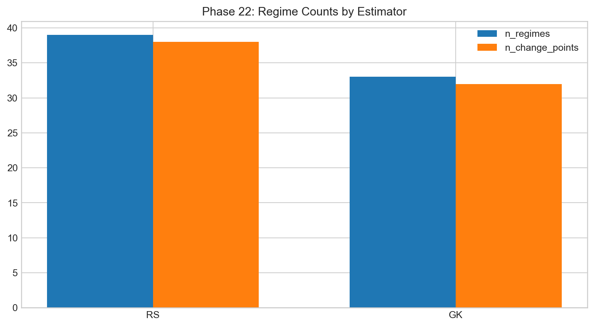
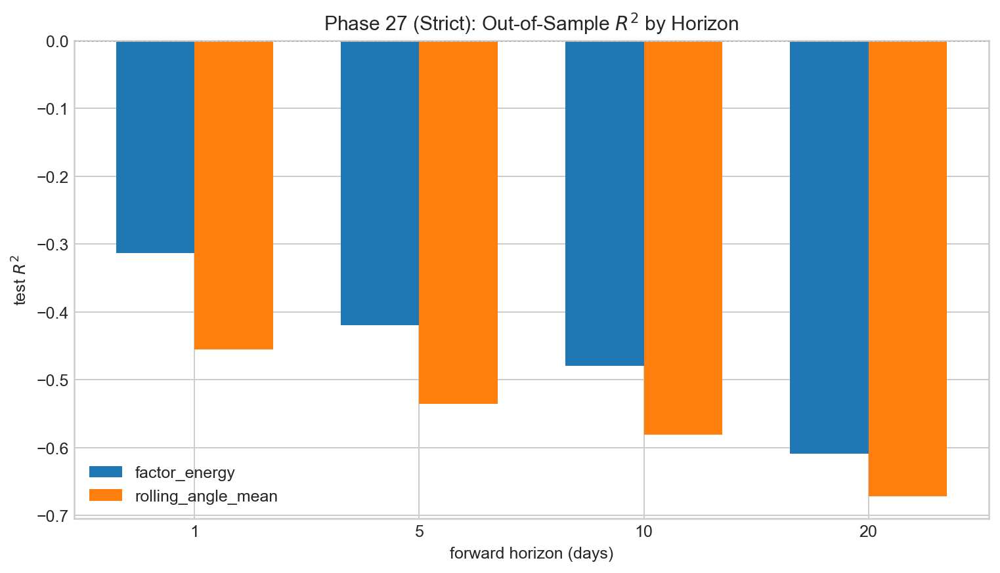

Findings
This is the exhaustive final findings page. It reflects repository outputs, phase exports, strict-vs-legacy validations, and final predictive diagnostics.
Repository-level findings coverage
This synthesis is not built from a single notebook; it consolidates evidence from:
- Integrated findings files:
findings_report.md,findings_report_neat.md, and related report variants. - Phase metric exports in
report/phase_*.txt. - Cross-phase summaries in
report/all_phases_overview.txtandall_phases_metrics_heavy.txt. - Artifact CSV trees under transformed/spectra/rmt/model/regimes/validation.
- Plot trees under
artifacts/plots/phase*and A/B strict-vs-legacy branches inartifacts/regime_ab. - Deterministic audit outputs from phase 26 and predictive strict outputs from phase 27.
Phase-by-phase findings ledger
Pre-phase and phases 1-8
The early pipeline establishes transformed volatility panel quality and confirms the raw realized-vol distribution is right-skewed with heavy spikes, justifying transform/stabilization before spectral decomposition.
Phase 9
Correlation-matrix diagnostics confirm usable geometry: broad positive co-movement, valid symmetry behavior, and interpretable core/periphery structure with sector-coherent high-correlation groups. Full-period static anti-correlation blocks are absent in main static matrix view.

Phase 10
Eigenspectrum is concentrated but not one-factor complete. The first mode dominates strongly while residual dimensionality remains meaningful. Low-rank representation is useful compression, not full explanation. Rolling windows show stability improves with longer windows.

Phase 11 and 12
MP separation identifies a small significant set above upper edge and a broad bulk consistent with noise-like behavior. Variant sensitivity shows concentration gains with smoothing and lower-tail pathology risk in some settings. MP is used as robust heuristic with diagnostics, not blind theorem under all finite-sample conditions.


Phase 13 and 14
Factor interpretation remains consistent with systemic-first hierarchy. The primary mode aligns strongly with market-wide volatility behavior; secondary mode carries conditional and sector-loaded behavior with weaker long-horizon invariance.


Phase 15 and 16
Stability diagnostics repeatedly show PC1 as robust anchor and PC2 as rotation-sensitive mode. Outlier-drop checks do not invalidate PC1 stability conclusions. Filtered reconstruction improves matrix usability while preserving dominant structure.


Phase 17
Low-rank model explains meaningful systematic share while leaving substantial idiosyncratic residual component, which is expected in real cross-sectional volatility. Residual matrix diagnostics confirm reduced common cross-correlation after factor removal.

Phase 18
Feature engineering from factor trajectories yields sparse high-intensity stress episodes and interpretable regime pressure indicators suitable for segmentation stage.

Phase 19
Change-point segmentation with BIC-guided penalty reveals persistent regime structure with penalty-sensitive complexity. Legacy and strict setups differ in regime count but preserve the core state-switching narrative.


Phase 20
Regimes are not cosmetic labels: regime-level means for market-volatility, dispersion, factor-share, and drawdown burden diverge materially, validating structural significance of segmentation.


Phase 21
Split robustness confirms strong persistence of the dominant systemic mode while effective K can vary by sample partition. This supports stable-core / flexible-secondary interpretation.

Phase 22
Estimator sensitivity (RS vs GK) preserves core outcomes (signal dimensionality and regime-level conclusions) with modest shifts in concentration metrics. Core narrative is estimator-robust.


Phase 23
Falsification tests show strong destruction under time randomization and nuanced behavior under stock-shuffle nulls. The mixed null profile is realistic for strongly coupled markets and was documented as such.


Phase 24
Reproducible stage-runner stack is complete and script-level command chain is documented for end-to-end replay.
Phase 25
Report drafting stage completed with section-locked structure and generated-table dependency.
Phase 26
Final hardening reports deterministic double-run pass with matching inventories/hashes and explicit caveat documentation.
Phase 27 (strict causality)
Strict predictive diagnostics preserve strong event discrimination while linear magnitude OOS fit remains weak. In report metrics: aligned rows around 5,081; best test AUC around 0.9007 (factor energy, 10-day); best test R² remains negative in linear OOS setup.



Consolidated findings retained
- Volatility co-movement has persistent low-dimensional structure with a dominant systemic mode.
- Secondary structure is real but less stable and more regime-sensitive.
- Regime segmentation captures economically meaningful state differences.
- Event-level predictive discrimination is strong under strict timing controls.
- Exact linear magnitude prediction remains weak OOS in strict setup.
- The full pipeline and outputs are reproducible under deterministic audit checks.
Consolidated findings not overstated
- No claim is made for a single invariant K across all windows and strictness settings.
- No claim is made for long-horizon point-forecast precision in this linear strict setup.
- No claim is made for universality outside this dataset/process without rerun.
Everything this page reflects from the repo
- Top-level code and data flow modules.
- Script orchestration chain and audit scripts.
- Phase-specific metrics files in
report/. - Integrated narrative findings in
findings_report.md. - Artifact CSV outputs across transformed/spectra/rmt/model/regimes/validation.
- Plot outputs across all major phases and strict-vs-legacy branches.
Shared reference
Dictionary: same terminology map used in every page.